Principles of Data Management
Welcome to the first section of this workshop. We are going to spend the next 30 minutes or so reviewing some foundational principles of data management before we dive into writing R code.
Data Horror Stories

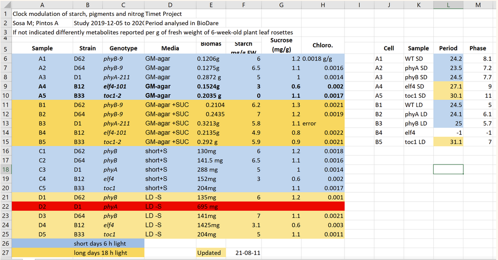
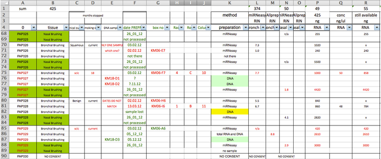
And upon receiving those spreadsheets, you feel something like this
Data Horror Stories
Data Organizing Principles
- Data Structure
- Variable Values
- Variable Types
- Missing Data
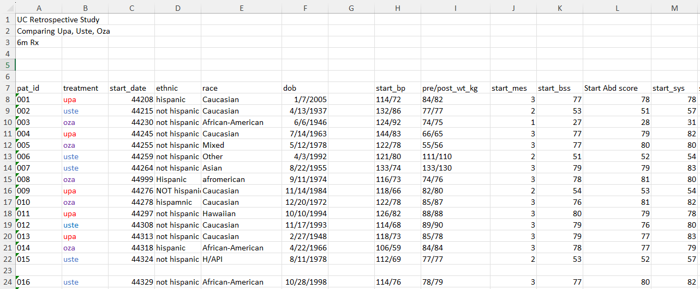
So we are going to talk about data organizing principles associated with 4 practices that will help you better think through how to wrangle those messy datasets
Data Structure
- Data should make a rectangle of rows and columns
- You should have the expected number of rows (cases in your data)
- You should have the expected number of columns (variables in your data)
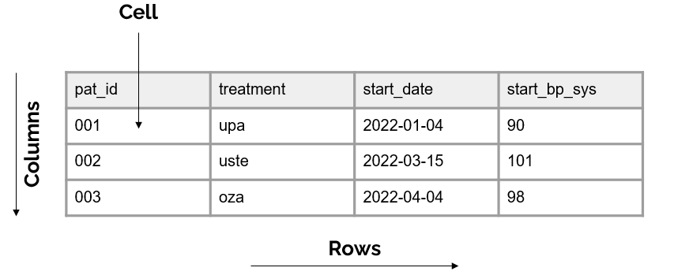
And at the intersection of those rows and columns are cells filled with values
You should have no more or no less than you expect. And when I say “expect”, hopefully have some idea of what should exist in your data. Either you collected it yourself so you have an idea, or you have been given a codebook or data dictionary that tells you what should exist in the data.
- Extra columns in your data may mean that you have empty columns or unexpected variables in your data
- Extra rows could mean you have duplicate or empty rows in your data
- Less columns in your data means you might be missing variables
- Less rows in your data means you may be missing cases And these are things that need to be remedied in our data cleaning process
Data Structure
- Variable names should be the first, and only the first, row of your data
- They should also adhere to variable name best practices
- Make variable names meaningful (
genderinstead ofX1) - Don’t start with a number
- No spaces in variable names
- No special characters except
_- So no
/,-,!,"
- So no
- Make variable names meaningful (
- They should also adhere to variable name best practices
These aren’t just arbitrary practices. They serve a purpose.
- First, they make your variable names more interpretable and easier to work with
- They also make your variables more compatiable with languages such as R. For instance, R does not allow variable names to start with numbers. It will give you an error if you do this. Data Structure Exercise
What data structure issues do you notice in our sample data?
1 minute timer
So let’s do a quick exercise. Take one minute to review this messy data and look for any structure issues going on here. And by structure I mean review both how the rows and columns are laid out as well as variable names. If you find any errors, type them in the chat.
Data Structure
- Variable names are not the first row of the data
- Our data does not make a rectangle - Empty column, empty rows
- Variable names do not adhere to best practices
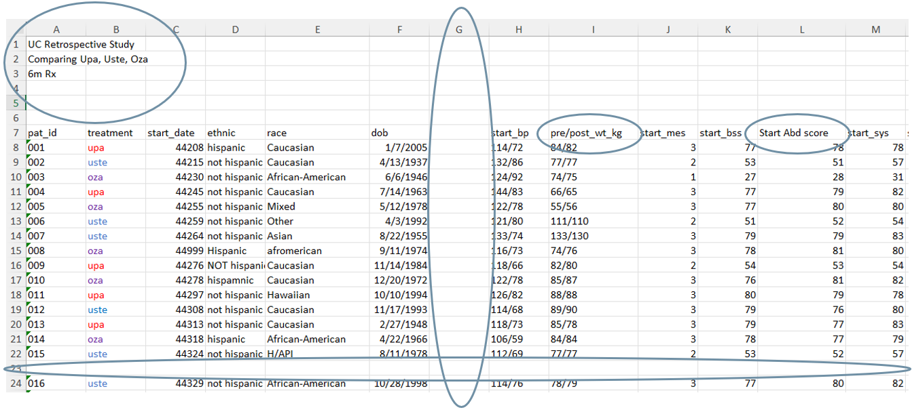
Variable Values
- Values should be explicit, not implicit
- If a blank cell is implied to be zero, fill that cell with an actual zero
- No color coding should be used to indicate information. Make a new variable.
- Values should be analyzable. This means no more than one measure should be captured in a variable.
- Variables should be captured consistently within a column
- Dates captured consistently (i.e. YYYY-MM-DD)
- Categories captured consistently (both spelling and capitalization)
- If the variable is numeric, values should fall within your expected range
We don’t ever want anyone to have to guess what a cell value means
So for instance, we don’t want both weight and height in the same variable. It would be very difficult to analyze a variable with combined information. We would want to split this information into two columns.
Pick a format and stick to it
For instance if you could make a decision to always capture dates in this ISO 8601 standardized format
So if you’re capture gender, you always want to spell male the same way, always want to spell female the same way. This allows your data to be easily categorized.
So if the range for a variable is 1-50, you shouldn’t see values outside of that range
Variable Values Exercise
What variable value issues do you notice in our sample data?
1 minute timer
Variable Values
- Color coding used to indicate information
- Two things measured in one column
- Categorical values captured inconsistently

Variable Types
Variables should be stored as your expected type (or in R terms - class)
- Numeric
- Contain numeric values (14.5, 14.539, 789, -24)
- Numeric variables cannot contain special characters, spaces, or letters
- 100mg
- 83/150
- ” 89”
- Date, Time, Date-Time
- Represented in R as either
<date>,<time>or<dttm>/<POSIXct> - Allow you to perform calculations on dates
- Represented in R as either
In R, type actually refers to how the variable is stored. Here we are more concerned about the abstract type that tells us how we can actually use the variable for analyses and so forth. And in R, that’s actually called variable class.
So let’s review a few of these variable classes.
- Because of the way dates are stored in R, they allow you to perform calculations using your dates, which is cool. You can add dates, subtract dates, etc. So as long as your dates are stored as dates, then we are good. However, if your dates are stored as character values, you will not be able to perform calculations on your dates.
It’s important to check your date types when you read in your data. While sometimes they are read in as dates, othertimes they may be read in as character values or numeric values and it’s important to be aware of this.
Variable Types
- Character
- Contain character values or strings (“kg”, “R in Medicine”, “11.5”, “5mg”)
- Factor
- A special class of variables, helpful when working with categorical or ordinal variables
- Factors assign an order to your variable groups
- You must assign this class to your variables
- Does anyone remember the default
stringsAsFactors = TRUE?
- Does anyone remember the default
- You can learn more about working with factors in this article: https://peerj.com/preprints/3163/
You can even store numbers as characters
Very useful for ordering your groups in tables, graphs, or models
So when you read in your data, your character variables will not automatically be assigned as factors. You need to assign this class yourself.
If anyone remembers the controversial default of strings as factors = TRUE from the old days, then you probably already know what I’m talking about
Just a warning, factors can be a little tricky to work with, especially when converting from factor back to a numeric variable. You can learn more about working with factors in this article from Amelia McNamara and Nicholas Horton.
Variable Types Exercise 1
What is the R class for the following variables?
[1] " 7.5" "2" "3.6" class(var1)[1] "character"[1] medium medium low high low
Levels: low medium highclass(var2)[1] "factor"[1] "50kg" "59kg" "82kg"class(var3)[1] "character"Variable Types Exercise 2
What variable type issues do you notice in our sample data?

1 minute timer
Variable Types
- Dates stored as numbers
- Special characters in numeric variables
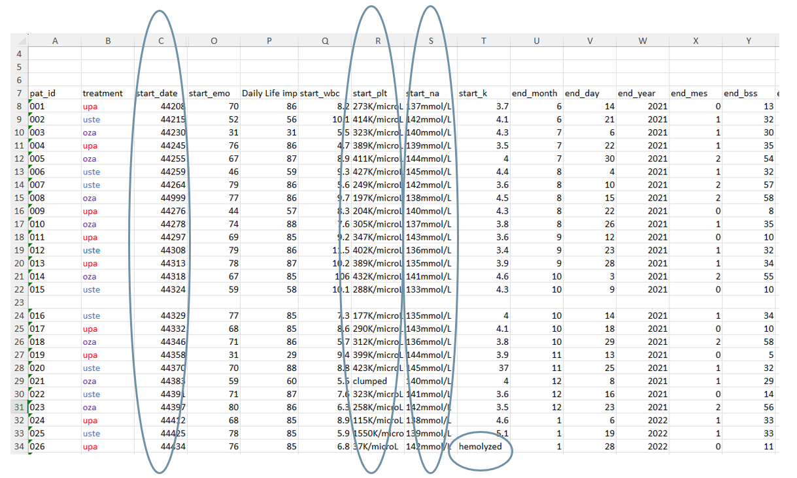
Missing Data
- Missing data should appear as you expect it to
- The amount of missingness
- The variables/cases that data is missing for
- Use consistent values to indicate missing responses
- Blanks? NAs? -999?
- The missing values should match your variable type
- i.e., Don’t use “no response” in a numeric variable
- So there are varying opinions on how missing data should be assigned. Some people think that missing data should be explicitly assigned with a value like -999. That way you know that the cell wasn’t just skipped over by accident when data was being entered.
Some people prefer to just leave the cell blank to not cause confusion by adding extreme values to a variable.
I personally have no preference for which method you use. What is important though, is that you use consistent values to represent missing data (choose one and stick with it) AND that your missing values match your variable type.
Missing Data Exercise
What missing data issues do you notice in our sample data?
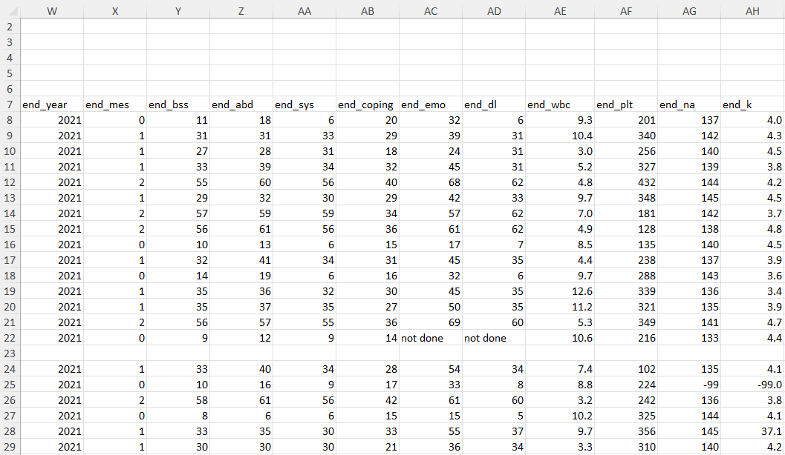
1 minute timer
Missing Data
- Unexpected missing data
- Inconsistent missing values used
- Missing values do not match variable type
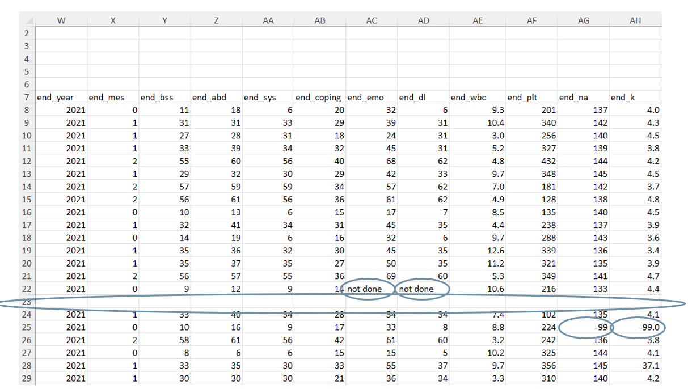
Error Reduction
The number one way to reduce data errors is to make a plan before you collect data
Correct data at the source
Plan the variables you want to collect
Build your data collection/entry tools in a way that follows your plan
Test your data tools before collecting/entering data
Check your data often during data collection/entry
So if you have the luxury of being able to collect your own data, you want to make sure that you spend time planning so you can correct data at the source
Plan the variables you want to collect
Necessary to plan for
- Variable name
- Variable label/item wording
- Variable type
- Allowable values/ranges
- Missing values
Nice to plan for
- Skip patterns
- Required items
- Variable universe
These items on the right can be really helpful to plan for if you are collecting something like survey data in particular. These items will help you better understand when and why you might have missing data for items.
- Are there skip or display patterns for any items? What is the logic behind those?
- Were items required or were people allowed to skip items?
- What is the variable universe for each item? Did the whole sample get each item or were some items only shown to a subsample of your group?
Add those variables to a data dictionary
Warning: package 'tidyverse' was built under R version 4.1.3Warning: package 'tibble' was built under R version 4.1.3Warning: package 'tidyr' was built under R version 4.1.3Warning: package 'readr' was built under R version 4.1.3Warning: package 'purrr' was built under R version 4.1.3Warning: package 'dplyr' was built under R version 4.1.3Warning: package 'stringr' was built under R version 4.1.3Warning: package 'forcats' was built under R version 4.1.3Warning: package 'lubridate' was built under R version 4.1.3-- Attaching core tidyverse packages ------------------------ tidyverse 2.0.0 --
v dplyr 1.1.1 v readr 2.1.4
v forcats 1.0.0 v stringr 1.5.0
v ggplot2 3.4.1 v tibble 3.2.1
v lubridate 1.9.2 v tidyr 1.3.0
v purrr 1.0.1
-- Conflicts ------------------------------------------ tidyverse_conflicts() --
x dplyr::filter() masks stats::filter()
x dplyr::lag() masks stats::lag()
i Use the conflicted package (<http://conflicted.r-lib.org/>) to force all conflicts to become errors| var_name | label | type | values |
|---|---|---|---|
| pat_id | Patient Identifier | character | 001-030 |
| treatment | Treatment for UC | character | upa; uste; oza |
| start_date | Date of start of treatment | date | YYYY-MM-DD |
| ethnic | Ethnicity - hispanic or not hispanic | character | hispanic; not hispanic |
| start_mes | Mayo endoscopic Score at start of treatment | numeric | 0-3 |
A data dictionary is a rectangular formatted collection of names, definitions, and attributes about variables in a dataset
Set this up similar to a dataset, with a row and column layout, with variable names in first row
Build your tools based on your data dictionary
Name your variables correctly in your tool
- Instead of Q1, Q2, Q3 -> id, start_date, treatment
Build items to only accept allowable values
- Only within specified range (0-50)
- Only within specified categories (“hispanic”, “not hispanic”)
Build items to only accept specified variable types
- Only numeric values
- Only dates in the YYYY-MM-DD format
And by tool I mean whatever program you use to collect or enter data. So that could be Excel, RedCap, Qualtrics, or something else.
This reduces confusion during data entry, and also creates less data cleaning steps when you export your data
If working with numeric items, only allow values in a specified range, for example 0-50. You can set these validation rules in your tools, so that if someone tries to enter 51, it will say, this value is not allowed
If working with categorical items, only allow values in specified categories. Here it can be really helpful to use something like a drop down menu instead of open text boxes to make sure you own collect allowable values only.
- Again, you can set these content validation rules in your tools so that a warning will pop up when unexpected formats or types are entered
Test your data collection or entry tool
- Collect/enter sample data
- Are any items missing?
- Are you getting unexpected values for items?
- Values out of range
- Incorrect formats
- Inconsistent entries
- “m”, “male”, “Male”, “MALE”
- Is the display logic working as expected?
- Are people able to skip items that they should not be able to skip?
If you find anything wrong, fix this in your tool before you begin to collect or enter data
Review your data often during data collection or entry
- Validate your data based on your expectations
pointblankvalidateassertr- Excellent resource: https://www.youtube.com/watch?v=0d1c-8yw6Tk
One option for reviewing your data is to write code to validate your specified criteria. So you can write code to validate that variables are your expected types, fall within expected ranges, ids are not duplicated and so forth.
Here are a couple of packages that have functions specifically for this purpose and they export really helpful reports for you to review.
This is a link to a great talk on validation that reviews all of these packages and more. I highly recommend watching it.
pointblank report
New names:
* `` -> `...7`library(pointblank)
create_agent(df_raw) |>
rows_distinct(columns = vars(pat_id)) |>
col_vals_not_null(columns = vars(pat_id)) |>
col_is_date(columns = vars(start_date)) |>
col_is_numeric(columns = vars(start_mes)) |>
col_vals_in_set(columns = vars(treatment), set = c("upa", "uste", "oza")) |>
col_vals_in_set(columns = vars(ethnic), set = c("hispanic", "not hispanic")) |>
col_vals_between(columns = vars(start_mes), left = 0, right = 3, na_pass = FALSE) |>
interrogate()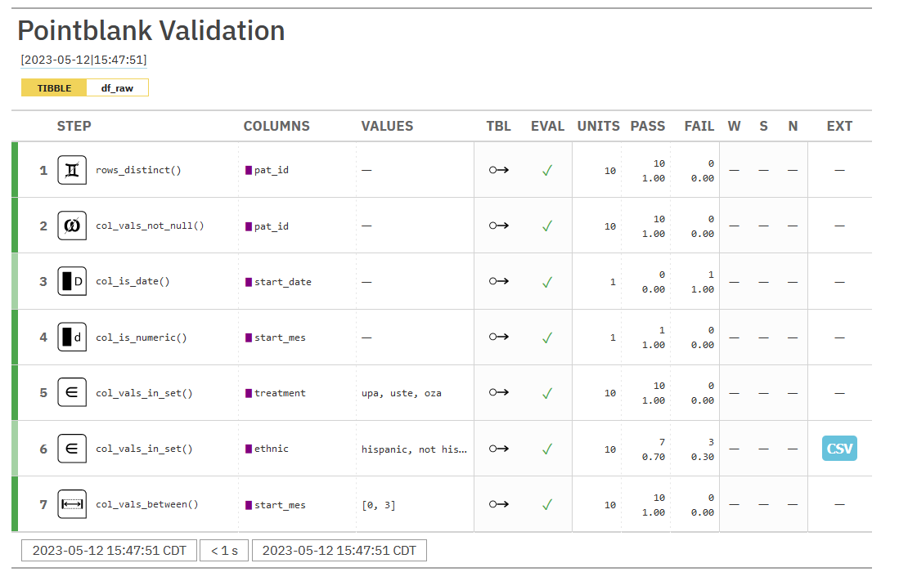
So here I am showing a very brief example of how I might set up some validation criteria using the pointblank package. And I could run this on a recurring schedule during data collection or entry to make sure everything is being collected as expected.
And when I run this code, I receive this report that assures me that everything is being collected as expected EXCEPT there are two variables that fail. My start_date variable is not being collected in a date format and my ethnicity variable has collected some unexpected values. And this is something that if caught early, I could go and fix in my tool. Because if I don’t fix this, I could end up with really messy data, or I might end up with data that is completely unusable if there are some values collected that I am unable to interpret.
Review your data often during data collection
- Create a codebook to review univariate summary statistics
codebookrcodebookmemiscsjPlot
A second option for reviewing your data during collection is to create a codebook. Codebooks provide descriptive variable-level information as well univariate summary statistics (such as means, ranges, counts). There are several R packages that automate the creation of codebooks.
But unlike validation, where we write code based on idividualized criteria, for the most part, these codebooks provide similar out of the box summary statistics that allow you to get a feel for what is going on in your data.
Both the validation and codebook methods provide you solid information to help you better understand if your data is being collected as expected.
codebookr codebook
library(codebookr)
df_codebook <- codebook(df_raw)
print(df_codebook,"my_codebookr_codebook.docx")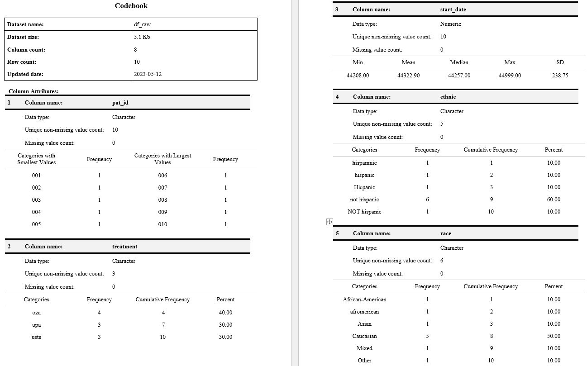
Here is one example of a codebook using the codebookr package. And if I ran that code, you can see it gives me a codebook that looks like this.
At the top it provides me some overarching dataset summary information and then it quickly jumps into variable-level information including summary statistics.
And I could once again see here that I am having issues with my start_date variable, it’s being collected as a numeric type instead of a date. And my ethnicity variable has some unexpected values. And I would want to go correct this at the source.
And last, the thing about codebooks is that they are even more useful when working with data that contains embedded metadata (like variable and value labels - you see in this in data that comes from programs like SPSS or Stata). When working with labelled data, those labels are displayed in the codebook. So for instance, if this was labelled data, you would see variable descriptions under each variable section, that describes what each variable represents. So for instance, under pat_id, you would see a label that says “patient unique identifier”. And that descriptive information helps me to better interpret the data. But as you can see, codebooks work fine without labels as well.
Data Cleaning Practices
So all of those practices we just covered are obviously done in an ideal world, where we have autonomy over how data is collected. But probably more often than not, you are handed data that you had no control over the collection/entry process.
Or maybe, even if you did collect our own data, despite your best efforts to collect/enter clean data, you still ended up with data that contains errors
For the remainder of this workshop will be working through a sample messy dataset to both identify and resolve issues to leave us with a usable tidy dataset that is ready for analysis.
Scenario
We have data that originate from an observational study comparing 3 treatments of ulcerative colitis (UC)
We have an analysis question:
- Are there differences in change in MES and QOL scores between start and finish, and are the decreases in scores greater for any of the 3 new medications?
In order to answer this question, we have asked a student to extract data from the medical record into Excel
Along with the spreadsheet, we are provided a data dictionary
As we start to review the data, we find a sundry of errors that need correction
Open the data and the data dictionary
Take 1 minute to review the data dictionary and our data.
1 minute
Believe it or not, the first thing we are going to do is NOT import our data into R. We are first going to open and review the data dictionary. We want to learn about what we should expect from our data before we open it.
Then we are going to open the Excel file. Because there is a lot of merit to knowing what you are getting into before reading your file into R.
….
So hopefully you noticed a few things upon reviewing our data.
Our variable names are not the first row of our data. That is really important to know before we try to import our data.
Our data is not the first sheet of our Excel file. It’s actually the 3rd sheet over. And that’s also important to know.
Import our file
We are going to use the
read_excel()function from thereadxlpackageThere are several arguments to consider when using this function
- path
- sheet = NULL
- col_names = TRUE
- na = ” ”
- skip = 0
type
?read_excelin your console to see more arguments
- list the path to our xls or xlsx file
- we can add the name or position of the sheet to read in
- should R grab column names from the first row in your data?
- are there any values that R should read in as NA?
- what is the minimum number of rows R should skip before reading anything?
Import our file
library(readxl)
df_raw <- read_excel("data/messy_uc.xlsx",
sheet = "Data", skip = 5
)Warning: package 'readxl' was built under R version 4.1.3New names:
* `` -> `...7`| pat_id | treatment | start_date | ethnic | race | dob |
|---|---|---|---|---|---|
| 001 | upa | 44208 | hispanic | Caucasian | 2005-01-07 |
| 002 | uste | 44215 | not hispanic | Caucasian | 1937-04-13 |
| 003 | oza | 44230 | not hispanic | African-American | 1946-06-06 |
| 004 | upa | 44245 | not hispanic | Caucasian | 1963-07-14 |
| 005 | oza | 44255 | not hispanic | Mixed | 1978-05-12 |
Your turn! Read in the data
Read the data in
3 minutes
Review the data
EDA is not a formal process with a strict set of rules. More than anything, EDA is a state of mind. During the initial phases of EDA you should feel free to investigate every idea that occurs to you. - R for Data Science

To quote the authors of R 4 Data Science
So what does this mean? It means there is no one prescriptive way to review your data. There are endless possibilities to figure out if there are errors in your data. Try any ideas you can think of. But there are some common steps you can at least start with.
Review the data
It is important to get to know your data
- How many rows? How many columns?
- What are the variable types?
- What are variable values?
- How much missing data is there?
- How are variables related?
There are several functions that can be used to explore data.
dplyr::glimpse()skimr::skim()base::summary()summarytools::dfSummary()visdat:vis_dat()DataExplorer::create_report()
So after you read your data into R, once again, use the old fashioned method of opening up your data and looking at it to see if everything imported as you expected.
After that, you can start to run some functions to review your data for the following things.
Are the values within your expected ranges? What outliers do you see? Is there a lack of variation? All values are equal to the same number?
Consider bivariate plots, is one variable high and the other low - is that normal
summarytools::dfSummary()
library(summarytools)
view(dfSummary(df_raw))So this function provides some overall summary information (number of rows and columns) as well as variable level summary information including variable type, values, frequencies, and histograms.
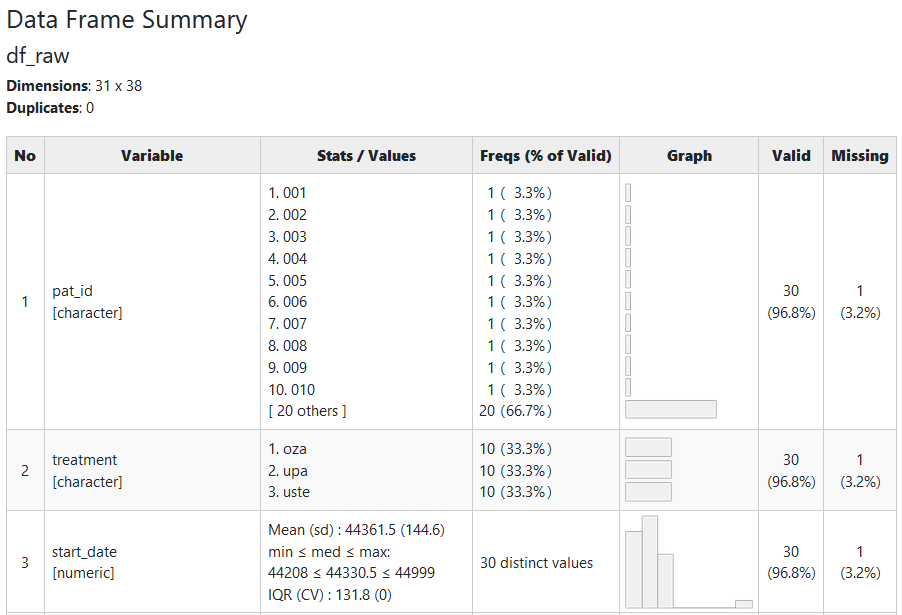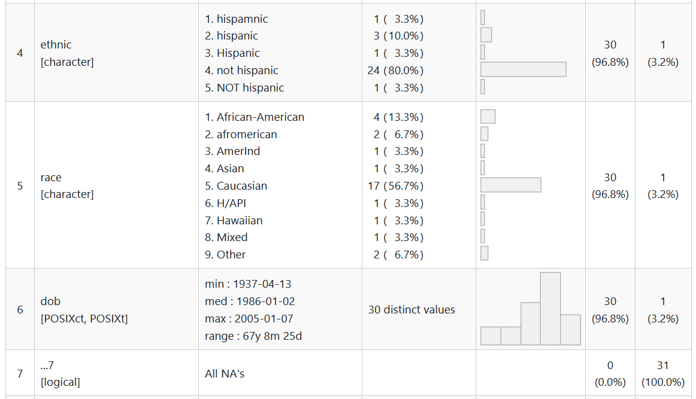
skimr::skim()
library(skimr)
skim(df_raw)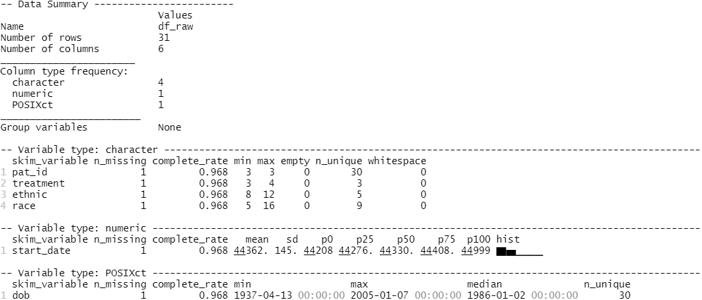
So this function provides similar information to dfSummary, just formatted differently. It also provides some overall data summary information (number of rows and columns) as well as variable level summary information including variable type, completion rate, values, percentiles, and histograms.
But a quick word of caution about this funciton. You’ll notice that it provides some misleading information for character variables. It gives a min and max value. This is actually the min and max character count for each variable.
Your turn!
Use one or more of these exploratory packages to review your data. Based on your data and your data dictionary, what fixes do you see that need to happen?
dplyr::glimpse()skimr::skim()base::summary()summarytools::dfSummary()visdat:vis_dat()DataExplorer::create_report()
5 minutes